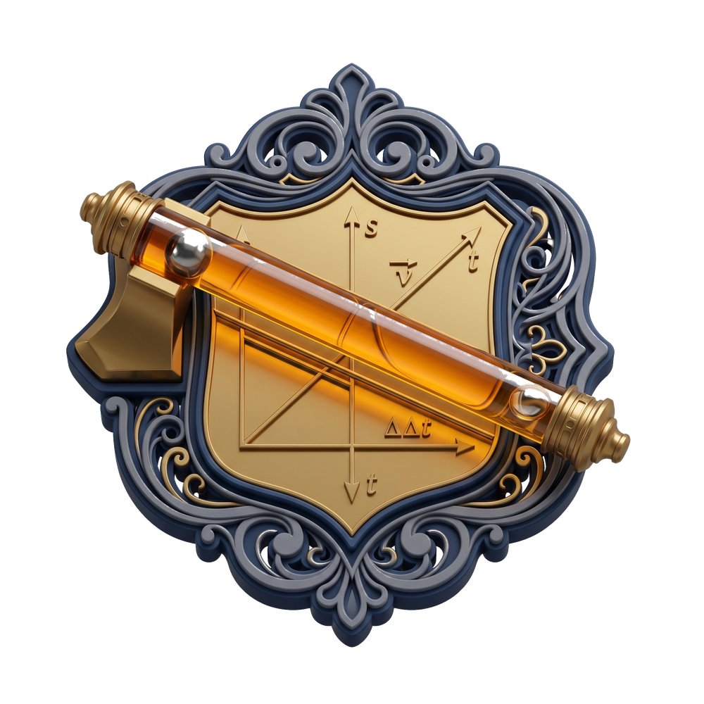
"Medir é saber."
Na quarta trilha de aprendizagem a bancada lateral do Laboratório de Mecânica estava diferente. Sobre ela, um objeto que não estava lá nas três semanas anteriores: um tubo transparente, com cerca de meio metro de comprimento, fechado nas duas pontas e apoiado num suporte, pouco inclinado em relação à bancada, cheio de um líquido transparente — óleo mineral. Dentro dele, duas coisas pequenas: uma esfera de aço, parada no fundo, e uma bolha de ar, presa no topo, do tamanho de uma unha.
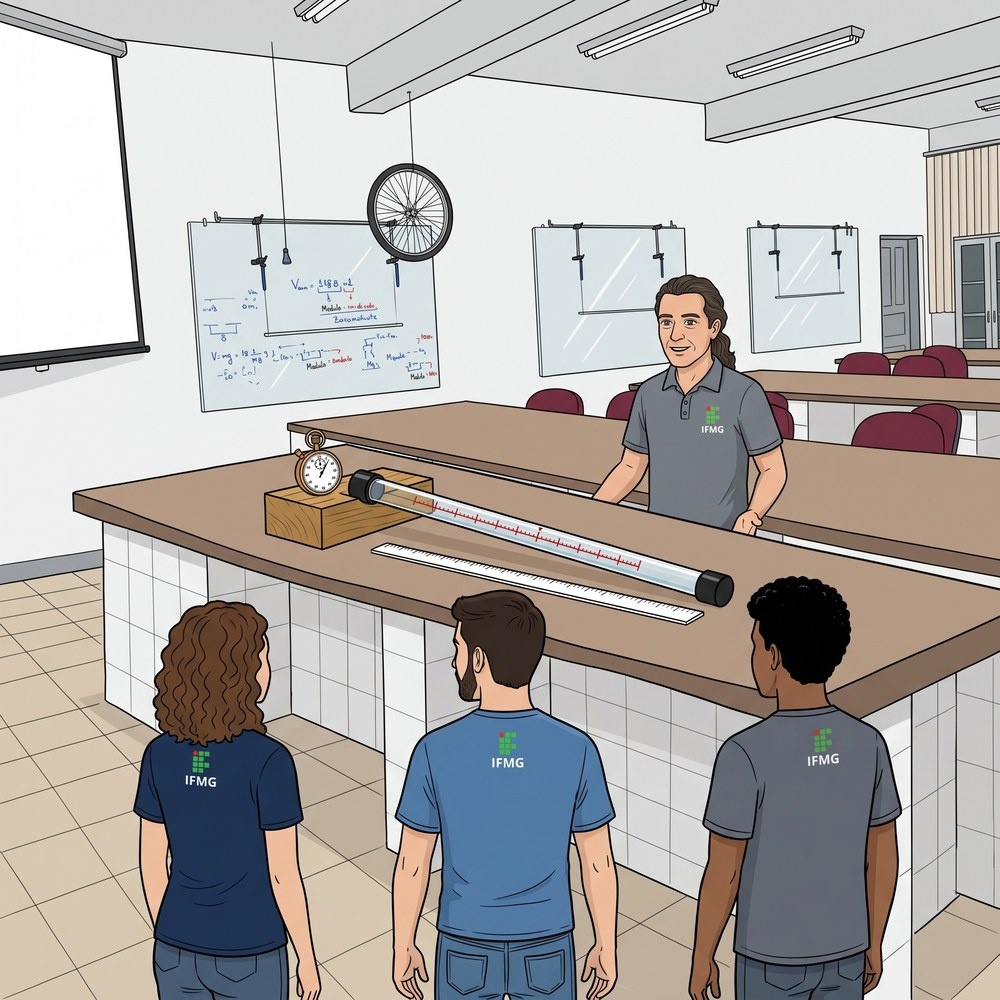
Ao longo do tubo, cinco pequenas marcas escritas à caneta vermelha: A, B, C, D e E. Sofia deitou ao lado do tubo a régua branca de 50 cm que o acompanhava — parente próxima das réguas da T01 — com o zero alinhado à marca A, e conferiu: as marcas estavam espaçadas de (10,0 ± 0,2) cm uma da outra, de A (na ponta erguida sobre o bloco de madeira) até E (na ponta baixa).
O Prof. Julio, de camisa polo, esperou os três se acomodarem e fez o gesto que abriria a manhã: segurou o tubo pelas extremidades, o inverteu de ponta-cabeça e o apoiou no bloco de madeira.
O que aconteceu em seguida parecia coreografado. A esfera de aço, agora no alto, começou a descer pelo óleo — sem pressa, sem acelerar, num ritmo que dava para acompanhar com o olho. A bolha de ar, agora embaixo, começou a subir — mais rápida que a esfera, mas igualmente regular. Em algum ponto do tubo, as duas se cruzaram: a esfera descendo, a bolha subindo, cada uma seguindo seu caminho como se a outra não existisse.
— De novo — pediu Pedro, antes que o professor dissesse qualquer coisa.
O Prof. Julio inverteu o tubo outra vez. De novo a esfera desceu no mesmo ritmo. De novo a bolha subiu. De novo se cruzaram — e Pedro teve a impressão de que o cruzamento acontecia sempre na mesma posição do tubo.
👦 Pedro (prático, direto): — Isso lembra a correia transportadora da britagem, professor. O minério anda em cima dela sempre na mesma velocidade, do silo até a pilha. Se eu sei a velocidade da correia, eu sei quando o minério chega. Serve pra isso, né? Prever chegada.
👩 Sofia (perguntadora, observadora): — Espera. Todo mundo está dizendo "mesma velocidade", mas ninguém mediu nada ainda. Como é que a gente sabe que a velocidade não muda? A T01 me ensinou a medir comprimento, a T03 me ensinou a medir tempo... será que juntando as duas dá para medir isso — uma velocidade?
🧑🎨 Lucas (paciente, reflexivo): — Meu avô dizia que o trem da Estrada de Ferro descia para Mariana "no ritmo de reza": sempre igual, dava para acertar o relógio da estação por ele. Quem precisou primeiro dessa regularidade? Antes de existir fórmula, alguém já vivia disso.
O Prof. Julio sorriu — as três frases juntas eram exatamente a aula que ele tinha planejado.
— Pedro quer usar, Sofia quer medir, Lucas quer entender de onde veio. Hoje vocês vão fazer os três. Este tubo é o laboratório mais honesto que existe para o assunto de hoje: o Movimento Retilíneo Uniforme, o MRU. Reta porque o caminho é reto. Uniforme porque o ritmo não muda. Até o fim da manhã, cada um de vocês vai ter medido a velocidade da esfera, escrito a fórmula da posição dela, desenhado os gráficos, feito o mesmo para a bolha — e vai prever com papel e lápis o ponto onde as duas se cruzam. Depois a gente inverte o tubo e confere: o modelo de vocês contra a natureza. Quem ganha?
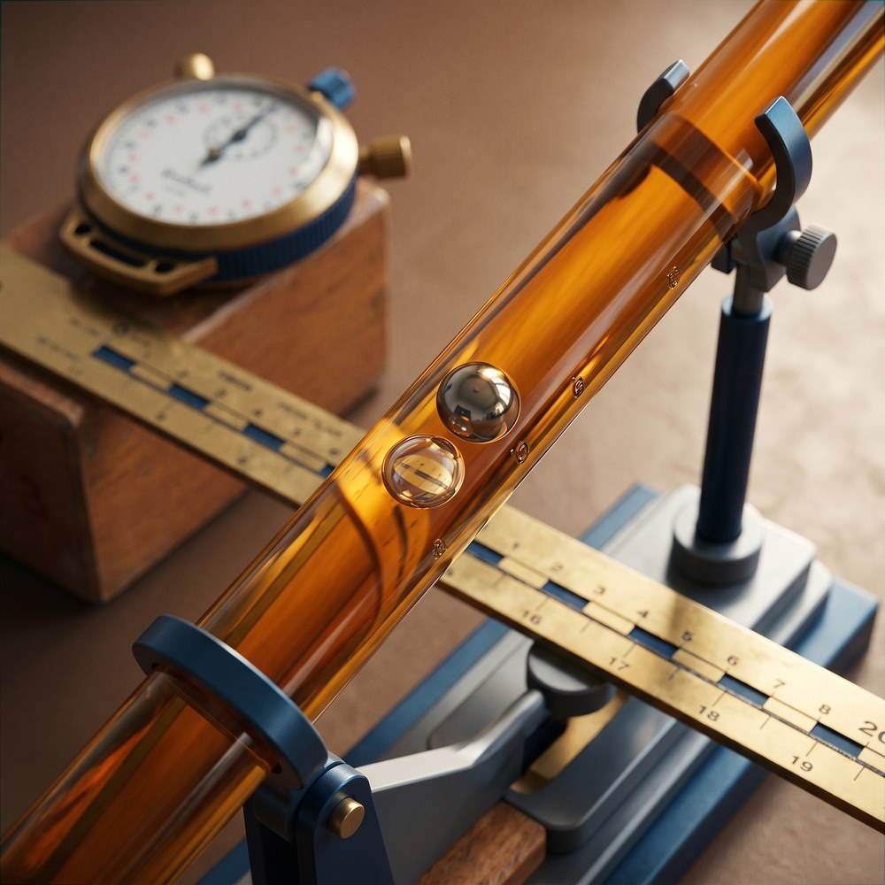
Sofia recebeu o Roteiro de Bancada e observou, na primeira página, a pergunta do dia: "Onde a esfera encontra a bolha?"
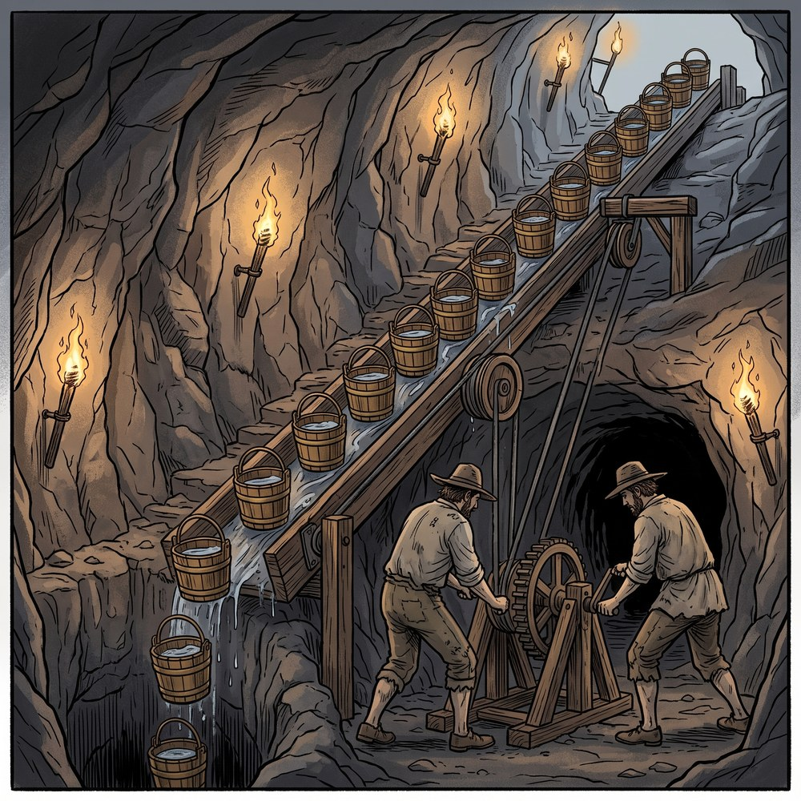
A Mina do Paschoal é um dos grandes tesouros do Palácio d'Ouro — uma mina de ouro original do século XVIII, preservada dentro do complexo e integrada ao percurso da visitação mediada. Ao entrar em seu interior, o visitante se aproxima da realidade da antiga Vila Rica, compreendendo como o ouro moldou cidades, movimentou impérios e transformou profundamente a história do Brasil.
Mais do que um espaço subterrâneo, a mina é um testemunho vivo do esforço humano, da técnica minerária e da vida cotidiana dos trabalhadores que atuaram na região há quase três séculos. Um complexo arquitetônico e minerador do século XVIII em Ouro Preto, onde história, arte, ciência e memória se encontram.
Para saber mais, acesse: palaciodouro.com.br — Mina de Ouro
🔗 Visite — trajeto do IFMG campus Ouro Preto até a Mina do Paschoal no Google Maps
Inverter o tubo foi o gancho — agora começa o trabalho. Os cinco tópicos desta trilha formam a primeira modelagem matemática completa da disciplina: nas trilhas T01, T02 e T03 você aprendeu a medir comprimento, massa e tempo, uma grandeza de cada vez; aqui, pela primeira vez, duas dessas medidas — posição e instante — se combinam para descrever um movimento. E descrever um movimento com números é o primeiro passo para o gesto mais poderoso da Física: prever o que ainda não aconteceu.
Antes de disparar o cronômetro, há decisões a tomar — e este tópico existe para mostrar que nenhum estudo de movimento começa medindo: começa escolhendo. As escolhas parecem burocráticas, mas são elas que fazem duas equipes diferentes chegarem a números comparáveis.
Quando uma mineradora instala uma correia transportadora, o projeto define primeiro o marco zero da correia (a origem), o sentido positivo do fluxo (do silo para a pilha) e o instante de referência da operação (o disparo da sirene de partida). Só depois disso os sensores de posição fazem sentido. Um relatório da Agência Nacional de Mineração (ANM) que diga "o material estava a 40 m" sem dizer a partir de onde e em que sentido é um relatório inútil — e reprovado em auditoria.
Nas galerias do século XVIII, os mineradores marcavam as paredes com entalhes a cada braça, contada a partir da boca da mina — uma origem escolhida por convenção, não pela natureza. Os carros de minério da Mina da Passagem, já no século XIX, desciam trilhos retos com marcos numerados: quem lê "marco 12" sabe onde o carro está porque alguém escolheu onde ficava o marco zero. A escolha de referencial é mais antiga que a fórmula.
"Minha casa fica a 3 quadras" — a partir de onde? "Chego em 10 minutos" — contados desde quando? Toda localização que você dá no dia a dia carrega, escondidas, as mesmas escolhas que o laboratório exige explícitas: uma origem, um sentido, um zero do relógio.
As quatro escolhas da nossa bancada — registradas no Roteiro de Bancada antes de qualquer medida:
| # | Escolha | Decisão da bancada |
|---|---|---|
| 1 | Origem das posições | O ponto A (a ponta de cima do tubo, erguida sobre o bloco) é a origem: sA = 0,0 cm — o zero da régua alinhado a A |
| 2 | Sentido positivo | O sentido da esfera descendo (de A para E) é o positivo |
| 3 | Cronômetro | Disparado zerado: t0 = 0,0 s |
| 4 | Posição inicial da esfera | No disparo do cronômetro, a esfera passa por A: s0 = 0,0 cm |
Com as escolhas feitas, a equipe mediu — e mediu como manda o método: três vezes com cada instrumento. Numa rodada, um estudante cantava as passagens ("A!... B!... C!...") e outro operava o cronômetro analógico que esperava sobre o bloco de madeira (alcance de 60 s, resolução 0,1 s), disparado zerado quando a esfera passa por A. Na outra, o instrumento era o cronômetro digital do celular em modo volta (lap) — que registra cada instante sem parar a cronometragem (resolução 0,01 s). São as medições reais feitas pela turma na manhã desta trilha:
Tabela 1 — Descida da esfera: régua e cronômetro analógico (3 medições)
| Marca | s (cm) | t1 (s) | t2 (s) | t3 (s) | t̄ (s) |
|---|---|---|---|---|---|
| A | 0,0 | 0,0 | 0,0 | 0,0 | 0,0 |
| B | +10,0 | 4,5 | 4,5 | 5,0 | 4,7 |
| C | +20,0 | 9,0 | 9,0 | 9,0 | 9,0 |
| D | +30,0 | 13,5 | 13,0 | 12,8 | 13,1 |
| E | +40,0 | 18,0 | 17,0 | 16,0 | 17,0 |
Tabela 2 — Descida da esfera: régua e cronômetro digital do celular (3 medições)
| Marca | s (cm) | t1 (s) | t2 (s) | t3 (s) | t̄ (s) |
|---|---|---|---|---|---|
| A | 0,0 | 0,00 | 0,00 | 0,00 | 0,00 |
| B | +10,0 | 4,14 | 4,15 | 4,22 | 4,17 |
| C | +20,0 | 8,38 | 8,06 | 8,15 | 8,20 |
| D | +30,0 | 12,52 | 12,46 | 12,24 | 12,41 |
| E | +40,0 | 17,07 | 16,66 | 16,60 | 16,78 |
Olhe primeiro para as colunas, não para as médias: as três medições nunca são idênticas — na marca E do analógico a diferença chega a 2,0 s. É a lição da T03 aparecendo no movimento: a incerteza dominante do tempo não é a resolução do aparelho, é o tempo de reação de quem aciona (~0,2 s por gesto), e por isso se mede três vezes e se trabalha com a média. Nas posições, as marcas foram assinaladas com incerteza de 0,2 cm, e a leitura na régua de 50 cm (divisão de 1,0 cm) carrega δs = 0,5 cm.
Aplicação. É este o protocolo que você repetirá a vida inteira, em qualquer bancada e em qualquer mina: escolher o referencial, registrar as escolhas, só então medir. Duas equipes com escolhas diferentes obterão tabelas diferentes para o mesmo tubo — e ambas estarão certas, cada uma dentro do seu referencial.
As Tabelas 1 e 2 são honestas, mas são mudas: as linhas não dizem onde a esfera estava em t = 10,0 s, nem quando passará por um ponto sem marca. Este tópico transforma a tabela em fórmula — e a fórmula responde o que a tabela cala.
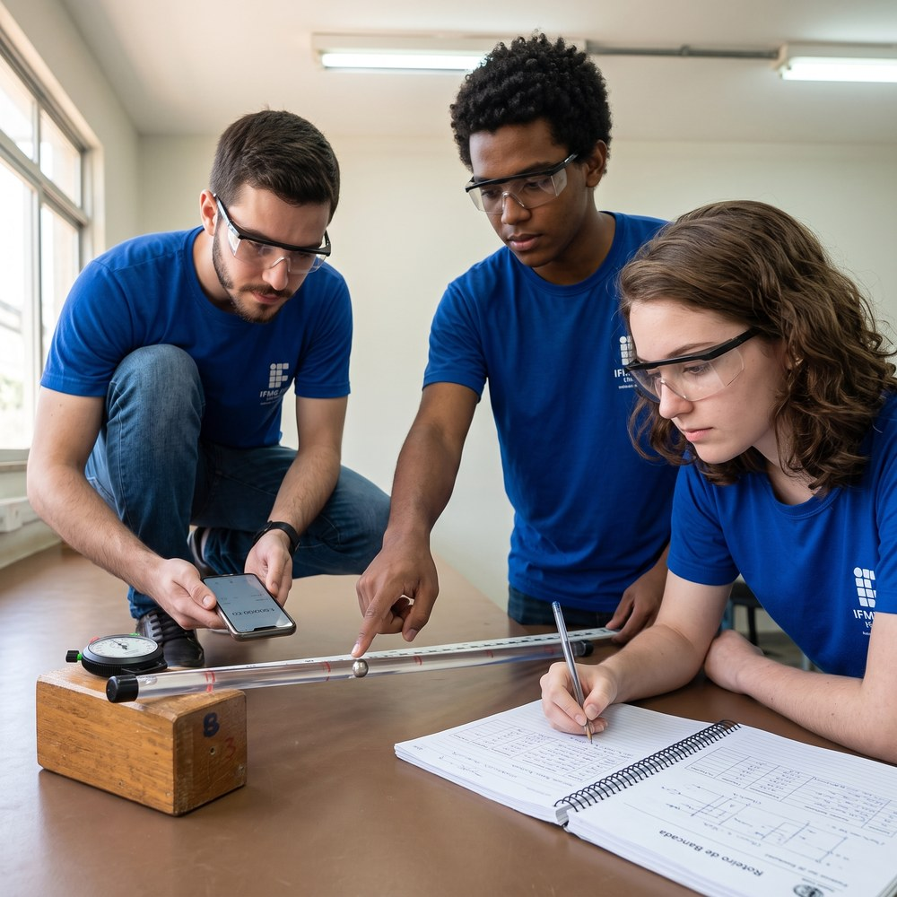
A correia transportadora TCLD de uma britagem típica do Quadrilátero Ferrífero opera em torno de 1,5 m/s, constante. O engenheiro não consulta uma tabela para saber onde está o minério que embarcou há 40 s: multiplica 1,5 × 40 e sabe — 60 m adiante do ponto de carga. A fórmula do MRU é a ferramenta de previsão mais usada da operação mineral contínua.
Os sistemas de drenagem das minas coloniais de Ouro Preto — os "rosários" de caçambas que subiam água em ritmo constante — eram dimensionados por regra de três: tantas caçambas por volta, tantas voltas por hora, tanta água por dia. Era o MRU aplicado sem o nome e sem o formalismo, com precisão prática notável: errar o ritmo era inundar a galeria.
A barrinha de download que estima "faltam 2 minutos" usa exatamente a conta deste tópico: mede o ritmo (bytes por segundo), supõe o ritmo constante e projeta a posição futura. Quando a estimativa erra, é porque a hipótese de uniformidade falhou — a sua internet não é um MRU.
Primeiro, o conceito verbal: a velocidade mede quanto de posição o móvel troca por unidade de tempo. Depois, a relação qualitativa: no MRU, deslocamentos iguais acontecem em intervalos de tempo iguais — dobrou o tempo, dobrou o deslocamento. Só então, a expressão matemática:
Equação 1 — Velocidade média:
| Símbolo | Significado | Unidade |
|---|---|---|
| v | Velocidade do móvel | cm/s (SI: m/s) |
| Δs | Deslocamento (s − s0) | cm (SI: m) |
| Δt | Intervalo de tempo (t − t0) | s |
Aplicando a Equação 1 a cada trecho, com os tempos médios da Tabela 2 (o digital, de resolução mais fina, dá a melhor estimativa):
Quadro 1 — A velocidade da esfera, trecho a trecho (médias do cronômetro digital)
| Trecho | Δs (cm) | Δt̄ (s) | v (cm/s) |
|---|---|---|---|
| A → B | 10,0 | 4,17 | 2,4 |
| B → C | 10,0 | 4,03 | 2,5 |
| C → D | 10,0 | 4,21 | 2,4 |
| D → E | 10,0 | 4,37 | 2,3 |
Os quatro valores não são idênticos — nenhuma medida real é — mas oscilam em torno de um mesmo centro, dentro da incerteza da bancada. A melhor estimativa é a média global: v = 40,0/16,78 = 2,4 cm/s. E o cronômetro analógico? Pela Tabela 1, v = 40,0/17,0 = 2,4 cm/s — os dois instrumentos, com resoluções tão diferentes, concordam na média. É isso que "uniforme" significa no laboratório: não "valores idênticos", e sim "valores compatíveis dentro da incerteza".
Com s0 = 0,0 cm (escolha 4), t0 = 0,0 s (escolha 3) e v = 2,4 cm/s, isolamos s na Equação 1 e nasce a fórmula que responde tudo:
Equação 2 — Função horária da posição no MRU:
| Símbolo | Significado | Unidade |
|---|---|---|
| s | Posição no instante t | cm |
| s0 | Posição inicial (no disparo do cronômetro) | cm |
| v | Velocidade (constante no MRU) | cm/s |
| t | Instante de tempo | s |
Para a nossa esfera: sesfera = 2,4 · t (com s em cm e t em s). Teste contra a tabela: em t̄ = 12,41 s, a fórmula dá s = 2,4 × 12,41 = 29,8 cm — a marca D (30,0 cm), dentro da incerteza. Confere.
E a aceleração? Aceleração mede quanto de velocidade o móvel troca por unidade de tempo. No MRU a velocidade não troca — logo:
Equação 3 — Aceleração no MRU:
| Símbolo | Significado | Unidade |
|---|---|---|
| a | Aceleração do móvel | cm/s² (SI: m/s²) |
| Δv | Variação de velocidade | cm/s |
No MRU, Δv = 0 em qualquer intervalo, portanto a = 0 cm/s². A esfera no óleo atinge esse regime porque o arrasto do líquido equilibra o peso aparente — assunto para as trilhas de dinâmica; por ora, a bancada nos entrega o fato: velocidade constante, aceleração nula.
Abra as animações de Movimento (capítulo I) do professor Vladimír Vaščák. Escolha a animação de movimento uniforme, ajuste a velocidade do móvel para um valor à sua escolha e pause a cada segundo, anotando a posição como fizemos nas Tabelas 1 e 2. Calcule Δs / Δt em dois trechos diferentes: os valores coincidem? É o critério do Quadro 1 funcionando na tela.
Aplicação. A fórmula s = s0 + v t é o primeiro modelo matemático completo que você constrói a partir de dados próprios. Guarde o método — tabela → velocidade média → função horária — porque ele se repete, com outras equações, em todas as trilhas de cinemática.
Uma fórmula fala com quem sabe álgebra; um gráfico fala com qualquer um que saiba olhar. Este tópico desenha o MRU três vezes — posição, velocidade e aceleração contra o tempo — e mostra que as três figuras contam a mesma história.
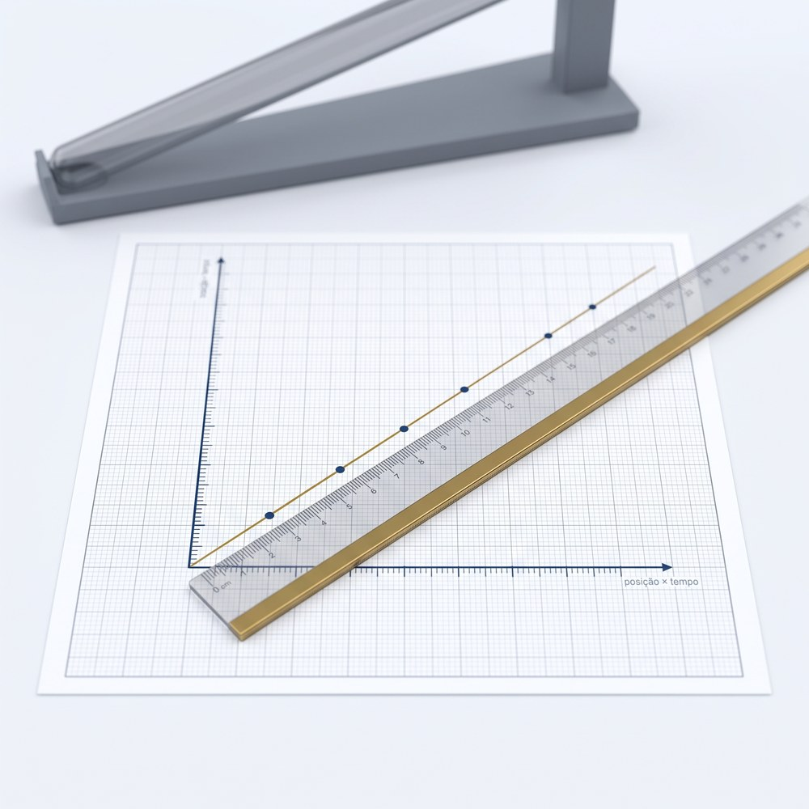
A sala de controle de uma mina moderna não exibe tabelas: exibe gráficos de tendência. O operador reconhece uma correia saudável pelo aspecto da curva de posição dos sensores — uma reta firme. Quando a reta "entorta", algo mudou de ritmo: material acumulando, motor perdendo torque. Ler gráficos de movimento é competência de sala de controle, não enfeite de aula.
Os horários das estações da Estrada de Ferro que serviu Ouro Preto e Mariana no século XIX eram, na prática, gráficos posição × tempo em forma de tabela: cada linha, uma estação; cada coluna, um instante. Engenheiros ferroviários da época desenhavam os "gráficos de marcha" — retas inclinadas num papel quadriculado — para descobrir onde dois trens se cruzariam e evitar que fosse na mesma linha. O Tópico 5 desta trilha refaz exatamente esse gesto.
O aplicativo de mapas do seu celular mostra a seta do ônibus avançando pela rota: é um gráfico de posição sendo desenhado em tempo real. Quando a chegada prevista "trava" no mesmo minuto por muito tempo, a reta da posição ficou horizontal — o ônibus parou.
Os três gráficos da esfera, construídos com os tempos médios da Tabela 2 e as Equações 2 e 3:
Quadro 2 — O que cada gráfico do MRU revela
| Gráfico | Forma no MRU | O que se lê nele |
|---|---|---|
| s × t | Reta inclinada | A inclinação é a velocidade: v = Δs/Δt; o ponto onde corta o eixo vertical é s0 |
| v × t | Reta horizontal | A altura da reta é o valor de v; a área sob a reta até o instante t é o deslocamento Δs |
| a × t | Reta sobre o eixo | a = 0 em todos os instantes — a assinatura do movimento uniforme |
Duas verificações que amarram tudo: a inclinação da reta s × t da esfera é 40,0 / 16,78 = 2,4 cm/s — a mesma velocidade do Quadro 1; e a área sob a reta v × t entre 0 e 16,78 s é o retângulo 2,4 × 16,78 ≈ 40 cm — exatamente o comprimento percorrido de A até E. Gráfico, tabela e fórmula são três línguas para o mesmo fato.
Nas animações de Movimento (capítulo I), abra uma simulação que desenhe o gráfico s × t enquanto o móvel anda. Rode uma vez com velocidade pequena e outra com o dobro dela, e compare as duas retas: o que dobrou foi a inclinação. Depois pause no meio do caminho e confira se posição lida no gráfico e posição do móvel na tela coincidem.
Aplicação. Diante de qualquer gráfico s × t, sua primeira pergunta profissional será: é reta? Se for, o movimento é uniforme e a inclinação entrega a velocidade sem nenhuma conta adicional. Se não for, a velocidade muda — e esse é o assunto das próximas trilhas.
A esfera tem um rival silencioso subindo em sentido contrário. Este tópico repete, para a bolha, tudo o que os Tópicos 1 a 3 construíram para a esfera — e ao fazê-lo revela o poder das quatro escolhas do Tópico 1: o mesmo referencial descreve os dois movimentos, sem mudar nada.
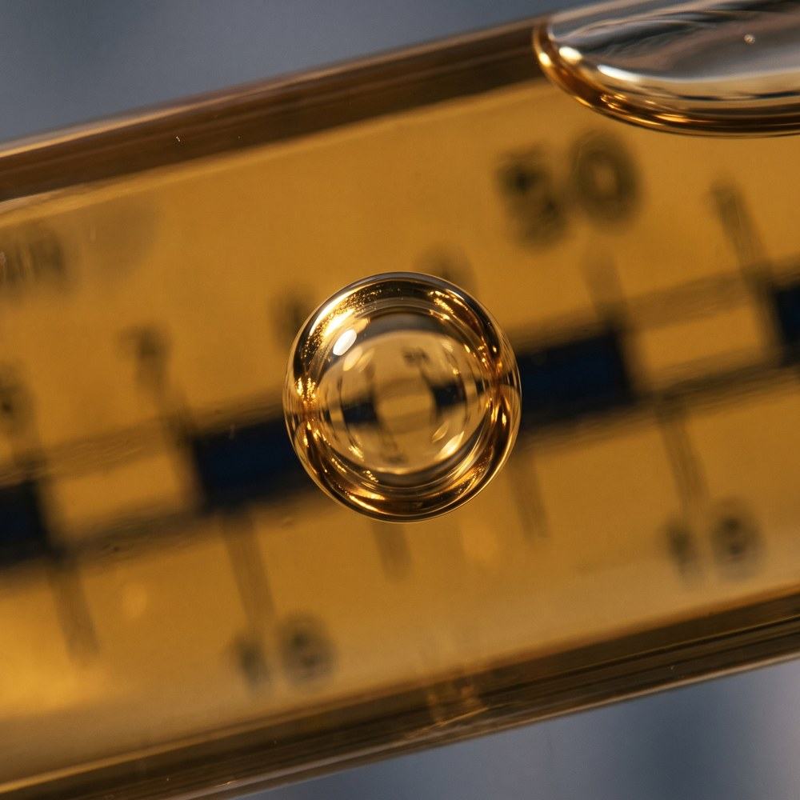
Na flotação — a etapa em que a mineração separa o minério útil da ganga — bolhas de ar sobem em ritmo aproximadamente constante através da polpa, carregando partículas de minério grudadas nelas. O engenheiro de processo precisa saber a velocidade de subida das bolhas para dimensionar a altura das células de flotação. A bolha do nosso tubo é a célula de flotação em miniatura.
Os garimpeiros coloniais de Ouro Preto conheciam o fenômeno inverso: na bateia parada, o ouro desce pela água em ritmo próprio, mais depressa que a areia. Separar por velocidade de queda em fluido — a decantação — sustentou a economia do século XVIII sem que ninguém escrevesse uma função horária. A física estava lá; faltava a linguagem.
As bolhas do refrigerante sobem pelo copo em fila, cada uma no seu ritmo regular. Repare da próxima vez: depois de um dedo de subida, cada bolha vira um pequeno MRU vertical — o mesmo do nosso tubo, em versão de mesa de lanchonete.
Mantidas as mesmas quatro escolhas do Tópico 1 (origem em A, positivo descendo, cronômetro zerado no disparo), a equipe inverteu o tubo de novo e mediu só a bolha — de novo, três vezes com cada instrumento. No instante do disparo, a bolha estava na marca E — logo, para ela, s0 = 40,0 cm:
Tabela 3 — Subida da bolha: régua e cronômetro analógico (3 medições)
| Marca | s (cm) | t1 (s) | t2 (s) | t3 (s) | t̄ (s) |
|---|---|---|---|---|---|
| E | +40,0 | 0,0 | 0,0 | 0,0 | 0,0 |
| D | +30,0 | 1,2 | 1,3 | 1,2 | 1,2 |
| C | +20,0 | 2,5 | 2,3 | 2,4 | 2,4 |
| B | +10,0 | 3,5 | 3,4 | 3,4 | 3,4 |
| A | 0,0 | 4,7 | 4,8 | 4,8 | 4,8 |
Tabela 4 — Subida da bolha: régua e cronômetro digital do celular (3 medições)
| Marca | s (cm) | t1 (s) | t2 (s) | t3 (s) | t̄ (s) |
|---|---|---|---|---|---|
| E | +40,0 | 0,00 | 0,00 | 0,00 | 0,00 |
| D | +30,0 | 1,25 | 1,29 | 1,32 | 1,29 |
| C | +20,0 | 2,54 | 2,42 | 2,38 | 2,45 |
| B | +10,0 | 3,52 | 3,44 | 3,39 | 3,45 |
| A | 0,0 | 4,68 | 4,78 | 4,66 | 4,71 |
Repare no tamanho da diferença: a bolha atravessa o tubo inteiro em menos de 5 segundos — o que a esfera leva quase 17 para fazer. A velocidade trecho a trecho (Equação 1, médias da Tabela 4): E→D dá (30,0−40,0)/1,29 = −7,8 cm/s; D→C dá −8,6; C→B dá −10,0; B→A dá −7,9. A dispersão aqui é maior que a da esfera — a bolha é rápida, e 0,2 s de reação pesam muito num trecho de ~1 s; um trecho chega a destoar. É a média global que dá a melhor estimativa: v = −40,0/4,71, ou seja,
(pelo cronômetro analógico, −40,0/4,8 = −8,3 cm/s — de novo os dois instrumentos concordam dentro da incerteza).
O sinal negativo não é erro — é informação. Ele diz que a bolha percorre a mesma direção (a reta pouco inclinada do tubo) no sentido oposto ao escolhido como positivo. A velocidade dela é 8,5 cm/s de subida; no nosso referencial, isso se escreve −8,5 cm/s.
Equação 4 — Função horária da bolha:
| Símbolo | Significado | Valor na bancada |
|---|---|---|
| s0 | Posição inicial da bolha (marca E) | 40,0 cm |
| v | Velocidade da bolha (sentido negativo) | −8,5 cm/s |
Quadro 3 — Esfera e bolha, lado a lado
| Característica | Esfera | Bolha |
|---|---|---|
| Função horária | s = 2,4 t | s = 40,0 − 8,5 t |
| Gráfico s × t | Reta subindo (inclinação +2,4) partindo de 0 | Reta descendo (inclinação −8,5) partindo de 40,0 |
| Gráfico v × t | Reta horizontal em +2,4 cm/s | Reta horizontal em −8,5 cm/s |
| Gráfico a × t | Reta sobre o eixo (a=0) | Reta sobre o eixo (a=0) |
| Tipo de movimento | MRU no sentido positivo | MRU no sentido negativo (e ~3,5× mais rápida) |
Nas animações de Movimento (capítulo I), procure uma simulação com dois móveis partindo de pontos diferentes em sentidos opostos. Configure um rápido e um lento, dispare e observe as duas retas no gráfico s × t se aproximando uma da outra. Antes de deixá-las se tocarem, pause e chute o ponto de cruzamento — o Tópico 5 vai lhe ensinar a acertar esse chute com álgebra.
Aplicação. Dois móveis, um referencial: essa é a disciplina mental deste tópico. Quem muda de referencial no meio do problema — ora medindo a bolha "de baixo para cima", ora a esfera "de cima para baixo" — nunca consegue juntá-los na mesma equação. E juntá-los é exatamente o que faremos agora.
Chegou a hora da aposta do Prof. Julio. Duas funções horárias no mesmo referencial, um lápis, e a pergunta do dia impressa no Roteiro de Bancada de Sofia: onde a esfera encontra a bolha? Este tópico constrói a resposta do modelo — e entrega à sua bancada a palavra final: a corrida de verificação que mede a distância entre previsão e realidade, o erro.
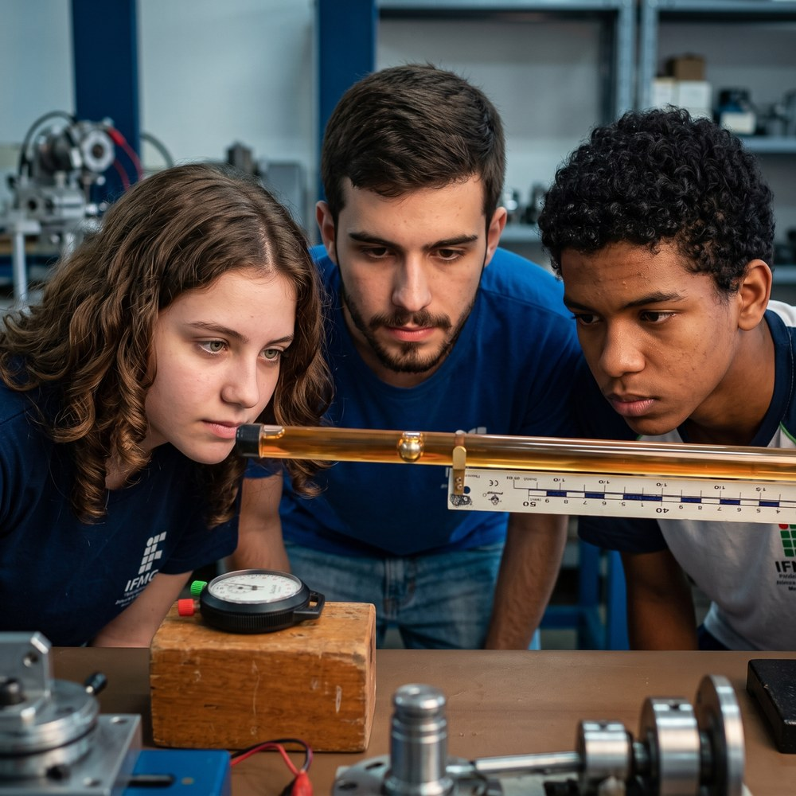
A metodologia experimental que usamos em toda a Física Experimental 1 tem oito passos — o Protocolo C5, o mesmo das trilhas anteriores e o mesmo que você aplicará sozinho no Projeto Investigativo:
Metodologia Experimental em 8 passos — Protocolo C5
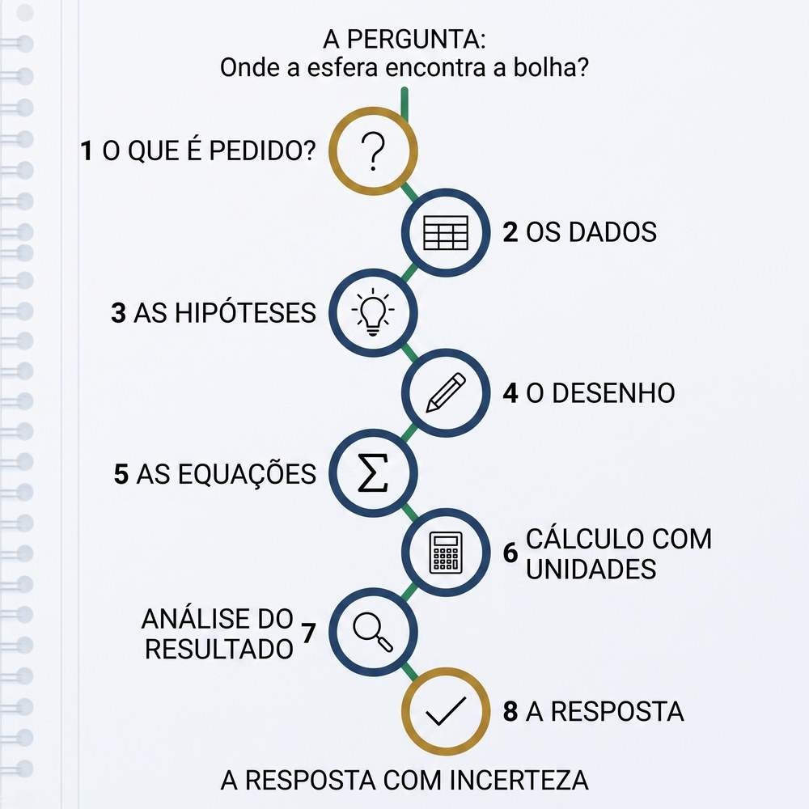
Resolução modelo C5 — o encontro
Passo 1 — O que está sendo pedido? Prever o instante tenc e a posição senc em que a esfera (descendo) e a bolha (subindo) se cruzam no tubo, e comparar a previsão com a medida experimental.
Passo 2 — Quais são os dados? Do Tópico 2: sesfera = 2,4 t. Do Tópico 4: sbolha = 40,0 − 8,5 t. Incertezas da bancada: marcas ±0,2 cm; leitura de posição δs = 0,5 cm; tempo de reação ~0,2 s.
Passo 3 — Quais são as hipóteses? (i) Os dois movimentos são uniformes durante toda a corrida — as velocidades medidas nos Quadros 1 e 3 valem também no trecho entre as marcas; (ii) esfera e bolha partem no mesmo instante t = 0, quando o tubo termina de ser invertido; (iii) o cruzamento não perturba nenhum dos dois movimentos.
Passo 4 — Qual é o desenho do problema?
Passo 5 — Quais são as equações? No encontro, os dois móveis ocupam a mesma posição no mesmo instante:
Passo 6 — Cálculos com unidades.
Passo 7 — Análise de resultados. A previsão cai entre as marcas A (0,0 cm) e B (10,0 cm), pertinho de B — plausível: a bolha é ~3,5 vezes mais rápida que a esfera, então o encontro tem de acontecer no primeiro quarto do tubo, no pequeno território que a esfera consegue percorrer antes de a bolha varrer o resto. E qual a confiança nessa previsão? Ela herda as incertezas dos dados: a leitura de posição (δs = 0,5 cm) mais o efeito do tempo de reação sobre a esfera (2,4 × 0,2 = 0,5 cm) dão uma faixa esperada de ±1,0 cm em torno de 8,8 cm.
Passo 8 — Responda o que foi pedido. O modelo prevê o encontro em senc = (8,8 ± 1,0) cm, no instante tenc = (3,7 ± 0,2) s. A palavra final é da bancada: a corrida de verificação — inverter o tubo e filmar o cruzamento em câmera lenta diante da régua — é o gesto que fecha a prática no Roteiro de Bancada (RB). Se o seu valor cair na faixa prevista, o modelo do MRU sobreviveu ao teste; se cair fora, os três suspeitos de sempre entram na sala: o tempo de reação ao declarar o "instante zero" da inversão, a paralaxe na leitura do cruzamento (T0A) e a fração de segundo que a bolha leva para atingir o ritmo constante — a hipótese (i) é boa, mas não perfeita.
Quadro 4 — Modelo teórico vs. medida da bancada
| Grandeza | Modelo (fórmula) | Medida (a sua bancada) | Critério |
|---|---|---|---|
| Instante do encontro | (3,7 ± 0,2) s | a registrar na corrida de verificação | dentro da faixa = compatível |
| Posição do encontro | (8,8 ± 1,0) cm | a registrar na corrida de verificação | entre 7,8 e 9,8 cm = compatível |
| Erro relativo em s | — | calcular com a fórmula do Passo 7 | explicar as causas, não escondê-las |
Prever encontro entre dois móveis é rotina de segurança na mineração: dois trens de minério na mesma via singela, um carregado descendo e um vazio subindo, só se cruzam onde o gráfico de marcha diz que há desvio. A faixa de ±1,0 cm que a bancada declara vira, na ferrovia, margem de segurança calculada — e a NR-22 exige que ela exista por escrito.
Foi para não errar esse cálculo que as ferrovias do século XIX — inclusive a que servia Ouro Preto — padronizaram seus relógios e seus gráficos de marcha. O encontro de dois trens previsto no papel, e conferido na realidade, é o ancestral direto do encontro da esfera com a bolha.
Você faz essa conta de cabeça quando atravessa a rua: estima a velocidade do carro que vem, a sua, e decide se o "encontro" acontece antes ou depois de você chegar à outra calçada. A diferença é que a bancada declara a incerteza — e o pedestre aposta a própria plausibilidade.
Aplicação. Confrontar modelo e medida — e explicar a diferença — é o gesto que define a Física Experimental. Um modelo nunca é "certo": é compatível com os dados dentro da incerteza ou é descartado. O do MRU já sobreviveu duas vezes hoje (dois instrumentos, mesma velocidade média); a terceira prova, a do encontro, é sua.
A mesma bancada, o mesmo tubo — mas quem fecha o Roteiro de Bancada não é quem o recebeu. A pergunta do dia, impressa na primeira página há 100 minutos, agora tem resposta com incerteza, anotada por Sofia: "modelo prevê o encontro em (8,8 ± 1,0) cm, aos (3,7 ± 0,2) s — um palmo abaixo da marca B. A corrida de verificação vai dizer se a natureza concorda."
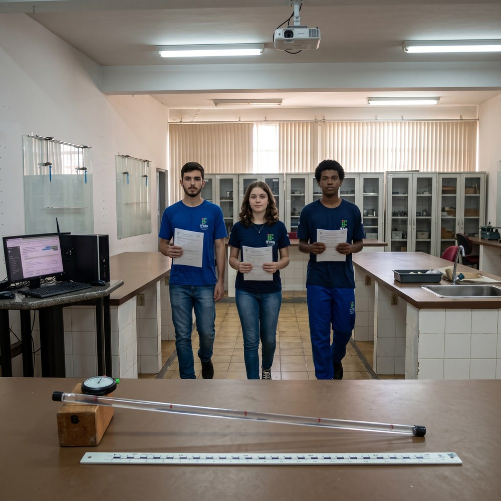
Pedro releu o Quadro 4 e reconheceu o que procurava desde a primeira frase da manhã: — Serve pra isso. A correia, o trem, a flotação: se o ritmo é constante, eu prevejo. E se a previsão bate com a medida, eu confio. É assim que se decide na mina.
Sofia percorreu as quatro páginas do Roteiro de Bancada — as quatro escolhas, as quatro tabelas, os três gráficos, o C5 completo — e escreveu na última linha: "Medir comprimento (T01) + medir tempo (T03) = medir movimento (T04). As trilhas se somam." Depois acrescentou, honesta como a bancada exige: "Os três cronômetros nunca deram o mesmo número. É por isso que medimos três vezes — a dispersão não é fracasso, é o tamanho da nossa honestidade."
Lucas foi o último a sair, como sempre. Olhou o tubo em repouso e pensou nos trens que desciam para Mariana no ritmo de reza, nos rosários de caçambas das minas coloniais, nas bolhas da flotação que sustentam a mineração de hoje. Anotou: "O MRU é velho. O que é novo é a gente saber escrever a fórmula dele — e conferir."
Antes de liberar a turma, o Prof. Julio fez três pedidos:
Os três saíram pela mesma porta do Pavilhão de Física, e Ouro Preto os recebeu com suas ladeiras — onde, eles agora sabiam, nenhum movimento é uniforme por muito tempo. Mas essa já é a pergunta de outra trilha.
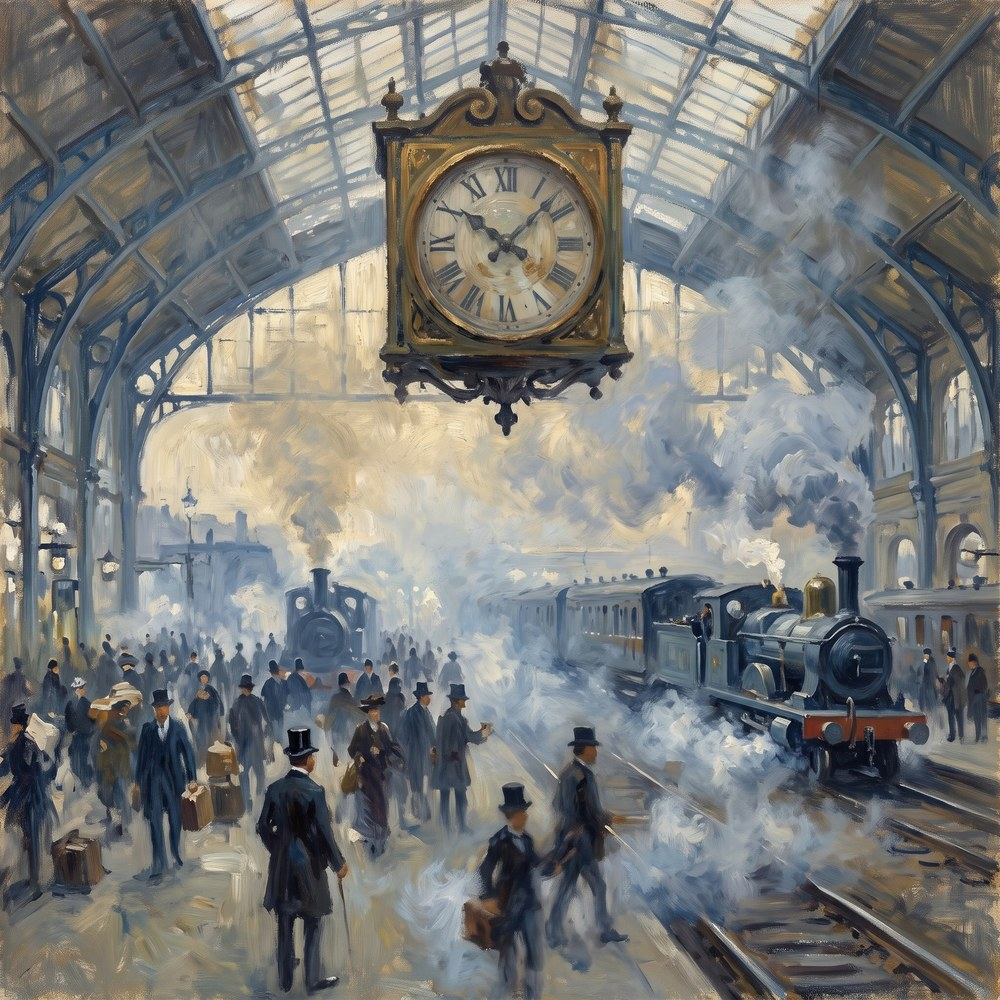
BONJORNO, J. R. Identidade Saraiva: Física. São Paulo: Saraiva, 2024.
MÁXIMO, A. et al. Física: contexto & aplicações. São Paulo: Scipione, 2013.
TALAVEIRA, A. C. et al. Física: ensino médio, v. único. São Paulo: Nova Geração, 2005.
BLOOM, Benjamin S. (org.). O desenvolvimento de talentos na juventude. Porto Alegre: Globo, 1988.
HEWITT, Paul G. Física conceitual. 12. ed. Porto Alegre: Bookman, 2015.
NICOLELIS, Miguel. O verdadeiro criador de tudo. São Paulo: Planeta, 2020.
PIAZZI, Pierluigi. Aprendendo inteligência. São Paulo: Aleph, 2008.
PIAZZI, Pierluigi. Inteligência em concursos. São Paulo: Aleph, 2013.
BRASIL. Ministério do Trabalho. NR-22 — Segurança e Saúde Ocupacional na Mineração. Brasília, 2002 (com alterações até 2021).
THOMSON, William (Lord Kelvin). Electrical Units of Measurement. Lecture at the Institution of Civil Engineers, London, 03 maio 1883.
VAŠČÁK, Vladimír. Física na escola — animações de Física (capítulo Movimento). Disponível em: https://www.vascak.cz/?id=1&language=pt. Acesso em: agosto 2026.
UNIVERSIDADE FEDERAL DE OURO PRETO. História da Escola de Minas. Ouro Preto: UFOP, 2026.